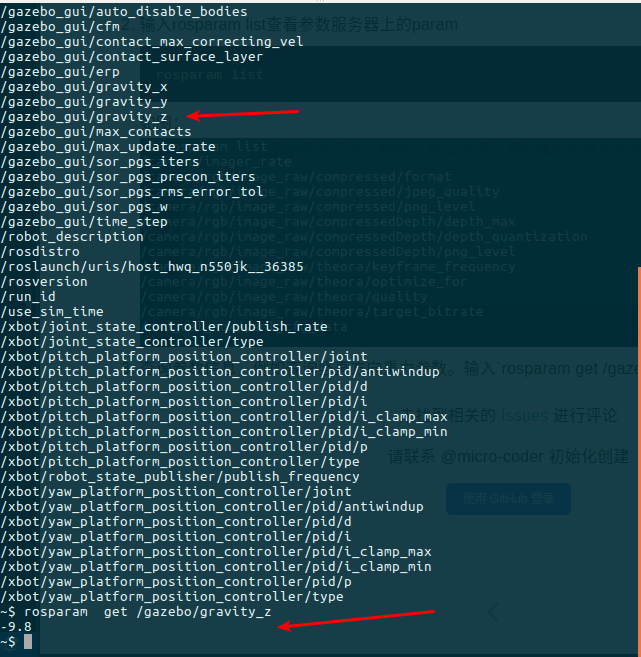
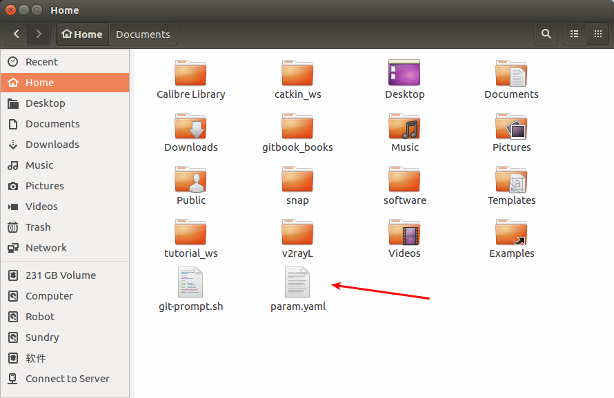

Parameter Server 参数服务器
简介
严格来说，param并不能称作一种通信方式，因为它往往只是用来存储一些静态的设置，而不是动态变化的。所以关于param的操作非常轻巧，非常简单。
前文介绍了ROS中常见的两种通信方式——主题和服务，这节介绍另外一种通信方式——参数服务器（parameter server）。与前两种通信方式不同，参数服务器也可以说是特殊的“通信方式”。特殊点在于参数服务器是节点存储参数、配置参数以及全局共享参数的地方。参数服务器使用互联网传输，在节点管理器中运行，实现整个通信过程。
参数服务器，作为ROS中另外一种数据传输方式，有别于topic和service，它更加的静态。参数服务器维护着一个数据字典，字典里存储着各种参数和配置。
字典简介
字典，其实就是一个个的键值对(key:value)。与C++中的map,或者python中的dict相似。我们小时候学习语文的时候，常常都会有一本字典，当遇到不认识的字，我们可以通过查拼音找到这个字，获取这个字的读音、意义等等。这里的字典可以对比理解记忆。
每一个key不重复，且每一个key对应着一个value。也可以说字典就是一种映射关系，在实际的项目应用中，因为字典的这种静态的映射特点，我们往往将一些不常用到的参数和配置放入参数服务器的字典里，这样对这些数据进行读写都更加方便高效。
维护方式
参数服务器的维护方式非常的简单灵活，总的来讲有三种方式：
- 命令行维护
- launch文件内读写
- node源码
下面一一介绍这三种维护方式。
命令行维护
使用命令行来维护参数服务器，主要使用rosparam语句来进行操作的各种命令，如下表：
| rosparam 命令 | 作用 |
|---|---|
| rosparam set param_key param_value | 设置参数 |
| rosparam get param_key | 显示参数 |
| rosparam load file_name | 从文件加载参数 |
| rosparam dump file_name | 保存参数到文件 |
| rosparam delete | 删除参数 |
| rosparam list | 列出参数名称 |
load&&dump文件
load和dump文件需要遵守YAML格式，YAML格式具体示例如下：
name:'Zhangsan'
age:20
gender:'M'
score{Chinese:80,Math:90}
score_history:[85,82,88,90]
简明解释,就是 “名称+：+值” 这样一种常用的解释方式。
一般格式：
key : value
遵循格式进行定义参数。其实就可以把YAML文件的内容理解为字典，因为它也是键值对的形式。
操作示例
- 首先打开模拟场景
roslaunch robot_sim_demo robot_spawn.launch - 输入rosparam list查看参数服务器上的param
如图：rosparam list
- 查询参数信息，例如查询竖直方向重力参数。输入
rosparam get /gazebo/gravity_z回车得到参数值
如图：rosparam get /gazebo/gravity_z
 - 尝试保存一个参数到文件。输入
rosparam dump param.yaml之后，就可以在当前路径看到该文件，也就能打开去查看到相关的参数信息
如图：rosparam dump param.yaml
